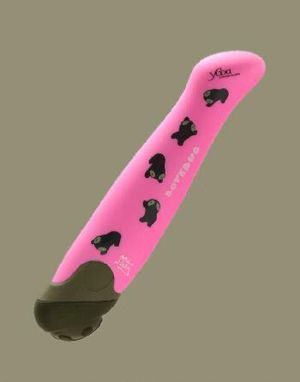

Espada
 De: La Frikipedia, la enciclopedia extremadamente seria.
De: La Frikipedia, la enciclopedia extremadamente seria.
| De la serie armas de ayer y hoy:
|
| Espada
|
|
|
| Fecha de invención
|
Después de las armas de fuego
|
| Letalidad
|
Mucha
|
| Peligrosidad (para uno mismo)
|
Poca, si te tropiezas, solo te matas raspas
|
| Es efectivo contra
|
Papel y plástico
|
| Personas que mata por minuto
|
Según el cine la Historia, unas 20
|
| Alcance (Si lo tiene)
|
Ninguno
|
| ¿Sirve en la actualidad?
|
¡Sí, en especial contra tanques y ametralladoras!
|
| Nivel de Frikismo
|
Altísimo
|
| Dificultad de uso
|
Lo mismo de arriba
|
| Precio
|
Su venta es ilegal
|
| ¿Es recomendable?
|
Algo
|
La espada es un curioso artefacto que sirve para lucirse como todo un guevon que le gusta pelear, su diseño es muy variado:
Tipos de espada
 La mejor espada, según las mujeres
- Espada común: una espada sin ningún uso en especial mas que hacer sufrir a los demas, como tu suegra pero la espada no te hace daño por voluntad.
- Espada RPG: espada que suele ser ridículamente grande para que el personaje parezca rudo, leer final fantasy para detalles.
- Katana: sable de guerra inventado por los japoneses para pelear, esta es recomendable, tiene un diseño que le permite enterrarse en el estomago del portador en caso de que pierda en combate
- Cuchillo: una espada reducida al tamaño de un lapiz. Lo usan los ladrones, asesinos, cazadores, chulos, espías, agentes, y tu tal vez.
- Espada friki laser:la espada mas útil de todas, disponible solo en coruscant works®, todo jedi, sith o friki que se respete tiene al menos una.
- Espada de bambu: arma que usa un samurai principiante.
- Palo del parque: es otra espada común, sirve para hacer tumores tan fuertes en la cabeza de alguien que su I.Q. baja al nivel que se parece a un cani.
- Zampakutoh: arma de shinigamis como Ichigo, Rukia, Renji y claro Ryuk.
- Keyblade: si ves un agujero en un picaporte esta arma sera especial sobre otras.
- Florete: armas de esgrimistas que practican para
subir un nivel mejorar su habilidad.
- Master Sword: espada brillante con filo que a los emos nunca deben tocar, solo a link le importa esta espada.
- Consolador: ¿necesita esto una explicación?
- Barilla de Pan: Espada utilizada por los italianos para defender sus panaderias
Creacion de la espada
En el año 732 a.q.t.l.s antes que tu lo supieras unos niños estaban jugado, de repente uno le da una hostia a otro, este agarra un palo y lo persigue. Viene su mama y les dice cuidado se arrancan un ojo y desde entonces se invento esta arma. Años después los guerreros usaron estas armas y las llamaron espadas. Nadie sabe porque pero como espada suena como espalda y una de sus cualidades es tajarte por atrás de ahí vendria el nombre. En resumen, algunas estan bien, otras apestan y otras son la Master Sword.
Hechos sobre las espadas
- La espada afilada es muy peligrosa.
- Es el arma favorita de los Emos, adivina por que.
- Esta prohibida en tres paises y medio.
- Hace que las mujeres parezcan unas acosadoras.
- Link sin una espada es otro humano entre muchos que puede salvar el mundo
o dominarlo.
- La frikipedia contrata espadachines para quedarse parados como idiotas en frente de sus puertas.
- La espada de kenshin no tiene filo, pero te pega donde mas te duele, el pancreas.
- Cada espada se le da un nombre ridículo como excalibur si es el arma importante de un juego, a otras le ponen nombres dificiles como espada de hierro o espada larga.... muy dificiles.
- Si una espada tiene sangre y la estas agarrando CORRE!!!.
- Si no la estas agarrando tu, agarrala y CORRE!!!.
- Si la tiene alguien mas, escondete, deja que maten a ese sujeto que tiene la espada, la agarras y CORRE!!!.
- La frikipedia no se hace responsable de que una espada se te atraviese por atrás.
- Si te encuentra una en un pedestal con el mango color morado, es porque es la master sword, si la agarras... Link se enojara contigo.
- Si tienes algún problema y no tienes espada busca un palo siempre ayuda para asustar idiotas o canis (al menos que el idiota o cani tenga una pistola).
- Si te das cuenta, las espadas sirven para hacerle la vida feliz a un emo.
Ver también
Enlaces externos
Autor(es):
- Roms
- Azulejos
- GonzaloQ
- Zilch
- Juan-kovas
- Veni Vidi Vici
- Crownnight
- LobitoBimbo
- Aronelmejor
- Dancob
Frikipedia 2005-2016, Licencia
GFDL 1.2 - Extraído por FrikiLeaks